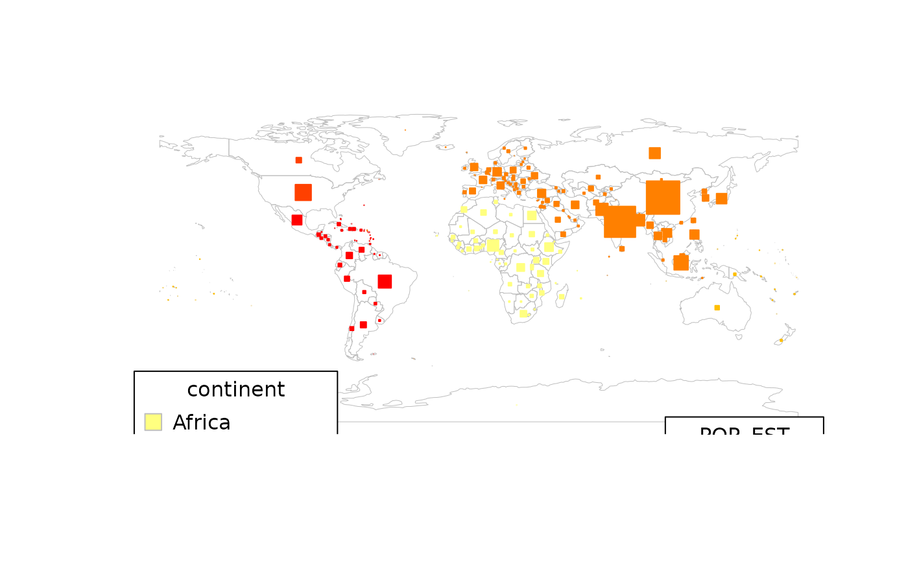
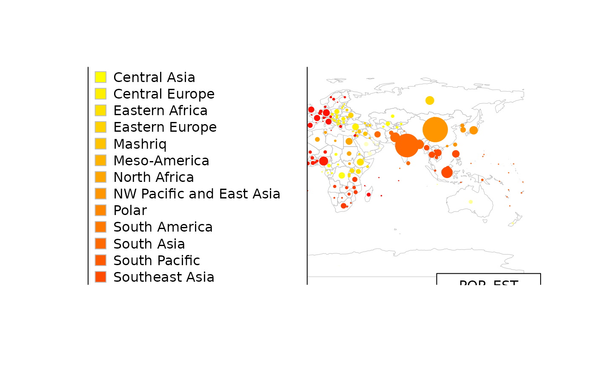
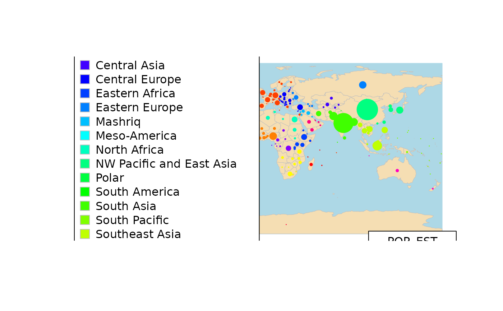
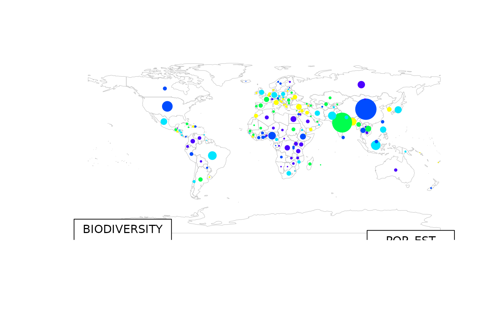
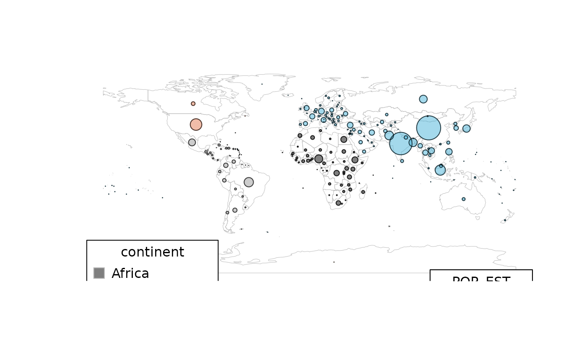

function to produce bubble plots on a map, size and colour determined by attribute data
mapBubbles2.RdThe function will produce a map with bubbles (circles) centred on country centroids (or other chosen points). Bubbles can be sized and coloured according to specified attribute values.
Usage
mapBubbles2(
dF = "",
nameX = "longitude",
nameY = "latitude",
nameZSize = "",
nameZColour = "",
fill = TRUE,
bg = NULL,
pch = 21,
symbolSize = 1,
maxZVal = NA,
main = nameZSize,
numCats = 5,
catMethod = "categorical",
colourPalette = "heat",
xlim = NA,
ylim = NA,
mapRegion = "world",
borderCol = "grey",
oceanCol = NA,
landCol = NA,
addLegend = TRUE,
legendBg = "white",
legendVals = "",
legendPos = "bottomright",
legendHoriz = FALSE,
legendTitle = nameZSize,
addColourLegend = TRUE,
colourLegendPos = "bottomleft",
colourLegendTitle = nameZColour,
add = FALSE,
plotZeroVals = TRUE,
lwd = 0.5,
lwdSymbols = 1,
...
)Arguments
- dF
data frame or SpatialPolygonsDataFrame
- nameX
name of column containing the X variable (longitude), not needed if dF is a SpatialPolygonsDataFrame
- nameY
name of column containing the Y variable (lattitude), not needed if dF is a SpatialPolygonsDataFrame
- nameZSize
name of column containing numeric variable to set symbol size
- nameZColour
name of column containing variable to set symbol colour
- fill
whether or not to fill symbols TRUE/FALSE
- bg
background (fill) color for the open plot symbols given by pch = 21:25.
- pch
symbol type, default of 21 for circles, will work with other filled symbol types e.g. 22=square, 23=diamond, 24=triangle
- symbolSize
multiplier of default symbol size
- maxZVal
the attribute value corresponding to the maximum symbol size, this can be used to set the scaling the same between multiple plots
- main
title for the map, set to nameZSize by default
- numCats
number of categories to put the data in, may be modified if this number is incompatible with the catMethod chosen
- catMethod
method for categorisation of data "pretty", "fixedWidth", "diverging", "logFixedWidth", "quantiles", "categorical", or a numeric vector defining breaks
- colourPalette
a string describing the colour palette to use, choice of :
="palette" for the current palette
a vector of valid colours, e.g. =c('red','white','blue') or output from RColourBrewer
= one of "heat", "diverging", "white2Black", "black2White", "topo", "rainbow", "terrain", "negpos8", "negpos9"
- xlim
map extents c(west,east), can be overidden by mapRegion
- ylim
map extents c(south,north), can be overidden by mapRegion
- mapRegion
a country name from getMap()\$NAME or 'world','africa','oceania','eurasia','uk' sets map extents, overrides xlim,ylim
- borderCol
the colour for country borders
- oceanCol
a colour for the ocean
- landCol
a colour to fill countries
- addLegend
whether to add a legend for symbol sizes
- legendBg
background colour for the legend, NA=transparent
- legendVals
allows user to set values & hence symbol sizing in legend
- legendPos
positioning of legend e.g. 'bottomleft', 'topright'
- legendHoriz
whether to arrange legend elements horizontally TRUE/FALSE
- legendTitle
title for the symbol size legend
- addColourLegend
whether to add a legend for symbol colour
- colourLegendPos
positioning of colour legend e.g. 'bottomleft', 'topright'
- colourLegendTitle
title for the colour size legend
- add
whether to add the symbols to an existing map, TRUE/FALSE
- plotZeroVals
whether to plot zero values as a cross, TRUE/FALSE
- lwd
line width for country borders
- lwdSymbols
line width for symbols
- ...
any extra arguments to points()
Details
By default separate legends are added fro symbol size and colouring on either side of the plot, these can be modified by altering legend parameters.
adapted from: https://github.com/andysouth/rworldmap/blob/master/R/mapBubbles.r
Examples
mapBubbles()
#> using example data because no file specified in mapBubbles
#square symbols
mapBubbles(pch=22)
#> using example data because no file specified in mapBubbles

mapBubbles(dF=getMap(), nameZSize="POP_EST", nameZColour="GEO3")
#> Warning: with catMethod='categorical' you have > 15 categories, you may want to try a different catMethod, e.g. quantile

#change colour
mapBubbles(dF=getMap(), nameZSize="POP_EST", nameZColour="GEO3"
,colourPalette='rainbow', oceanCol='lightblue', landCol='wheat')
#> Warning: with catMethod='categorical' you have > 15 categories, you may want to try a different catMethod, e.g. quantile

data("countryExData",envir=environment(),package="rworldmap")
sPDF <- joinCountryData2Map(countryExData,joinCode = "ISO3"
,nameJoinColumn = "ISO3V10")
#> 149 codes from your data successfully matched countries in the map
#> 0 codes from your data failed to match with a country code in the map
#> 94 codes from the map weren't represented in your data
mapBubbles(sPDF, nameZSize="POP_EST",nameZColour="BIODIVERSITY"
,colourPalette='topo',numCats=5,catMethod="quantiles")

#filled bubbles with set transparency
mapBubbles(fill=TRUE,colourPalette=adjustcolor(palette(), alpha.f = 0.5))
#> using example data because no file specified in mapBubbles
#> Warning: 8 colours specified and 6 required, using interpolation to calculate colours
#add bubble edge of a single colour (also with option to set transparency
mapBubbles(nameZColour = adjustcolor('black', alpha.f = 0.7), fill=FALSE, add=TRUE)
#> using example data because no file specified in mapBubbles
